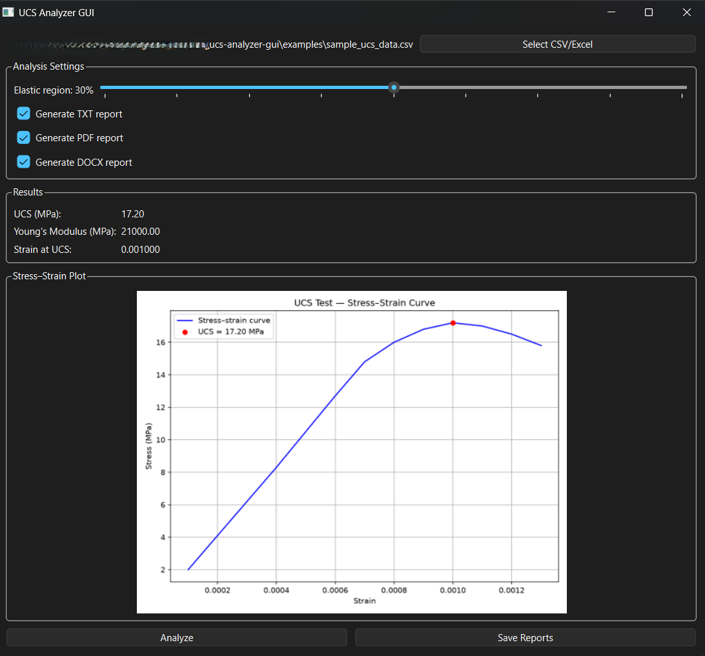

UCS Analyzer
A Python tool for processing Uniaxial Compressive Strength test data with automatic elastic region detection.
Overview
The UCS Analyzer processes raw stress-strain data from UCS tests and automatically detects the elastic region. It computes Young's modulus, peak strength, and generates clean plots for engineering reports.
Features
- Automatic elastic region detection.
- Peak stress and strain calculation.
- Young's modulus estimation.
- CSV input and cleaned CSV output.
- Matplotlib plots for stress-strain curves.
- Batch processing for multiple specimens.
Tech Stack
GitHub Repository
Installation & Usage
git clone https://github.com/mbalandari/ucs-analyzer-gui.git
cd ucs-analyzer-gui
pip install -r requirements.txt
python -m gui.app
